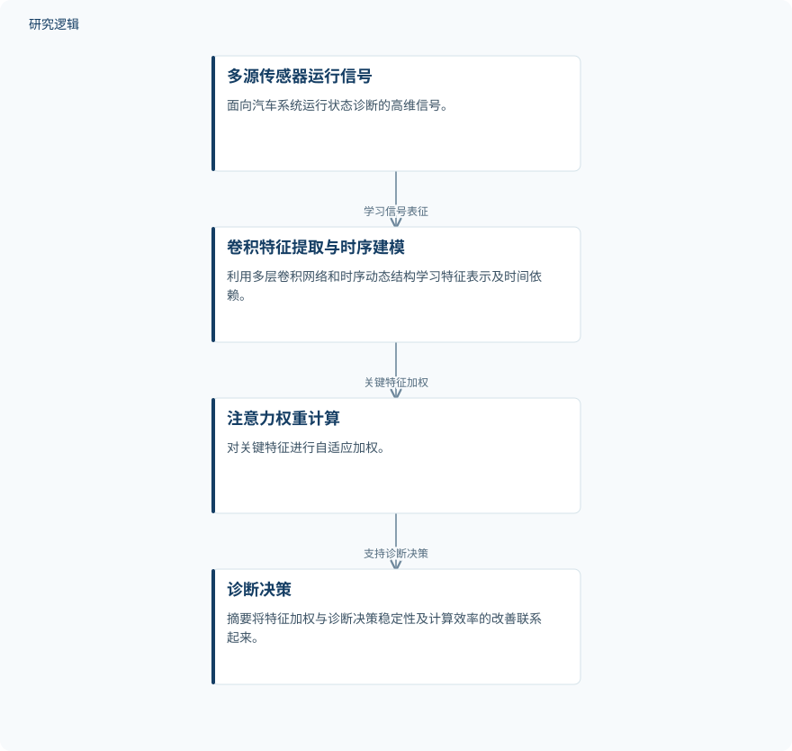

摘要解读
汽车故障诊断系统中的深度学习算法优化
Optimization of deep learning algorithms in automotive fault diagnosis systems
解读更新 2026-11-10 18:17 · 依据公开摘要整理，未核验全文细节
汽车运行状态诊断既要从高维传感器信号中提取有效特征，也要处理信号随时间变化的依赖关系。这项研究将卷积特征提取、时序建模与注意力加权结合，值得关注的是诊断准确率与训练效率如何同时得到考量。
文章目录
汽车多源信号的难点：高维特征与时间依赖
研究针对复杂设备运行状态识别中，高维传感器数据建模效率不足的问题，构建面向汽车系统运行信号的深度学习诊断计算框架。其处理对象是多源传感器信号，关注的不只是特征表示，还包括时间序列中的依赖关系。
从摘要的组织方式看，本文将诊断建模与计算效率放在同一框架中讨论：既设计信号表征和特征加权机制，也在训练阶段引入并行计算。
卷积与时序建模提取信息，注意力突出关键特征
方法层面，作者设计多层卷积特征提取网络与时序动态建模结构，用于实现多源传感器信号的高维特征表示和时序依赖学习；随后引入注意力权重计算机制，对关键特征进行自适应加权。
训练阶段采用交叉熵损失和梯度优化策略，并利用GPU并行计算提升大规模数据处理效率。摘要没有给出时序结构的具体类型、优化器名称或网络配置，因此不能进一步将其归为某种特定架构。
依据摘要整理的汽车信号诊断过程


仅概括摘要明确描述的信号建模与特征加权关系，不表示论文原图，也不补充具体网络连接或实验配置。
下载 SVG图示关系说明
实线表示相邻阶段的信息流，虚线表示跨阶段联系或反馈。
多源传感器运行信号 → 卷积特征提取与时序建模：学习信号表征；卷积特征提取与时序建模 → 注意力权重计算：关键特征加权；注意力权重计算 → 诊断决策：支持诊断决策
摘要报告准确率与收敛速度两项结果
在15,000个样本的数据条件下，摘要报告该算法的诊断准确率达到94.7%，训练收敛速度提高约18.3%。这是当前资料中明确给出的定量结果，但收敛速度提升所对应的比较对象和计算口径尚不清楚。
摘要还将注意力加权与诊断决策稳定性、计算效率的改善联系起来。不过，当前摘要没有提供稳定性的独立量化指标，不能将准确率或收敛速度的结果直接当作稳定性提升的证明。
样本构成、比较基线与验证边界仍待确认
仅凭摘要，无法判断样本来自哪些车辆、传感器与故障类别，也无法确认数据划分方式、样本独立性及类别分布。15,000个样本不能直接理解为同等数量的独立车辆或独立故障事件。
摘要未交代比较基线、重复试验与不确定性，也未说明跨车辆、跨工况或实际部署的验证范围。因此，这些结果尚不足以判断模型的泛化能力和现场运行表现；这属于摘要的信息边界，不代表论文没有开展相关工作。
阅读启发：分清识别表现与效率收益的来源
阅读启发：对于智能运维读者，进一步阅读时可重点核对卷积、时序建模和注意力各自的作用证据，并区分模型设计与GPU并行计算对效率的贡献。同时应确认准确率的评价对象，以及收敛速度提升的参照条件，再判断这些结果对汽车故障诊断的实际意义。
以上为本站阅读启发与建议，不是论文已验证的结论。